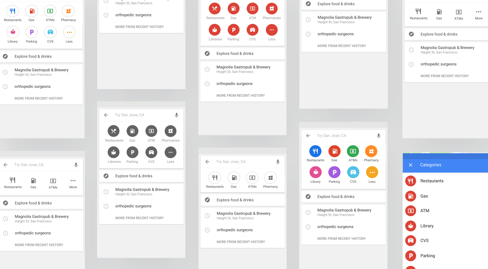
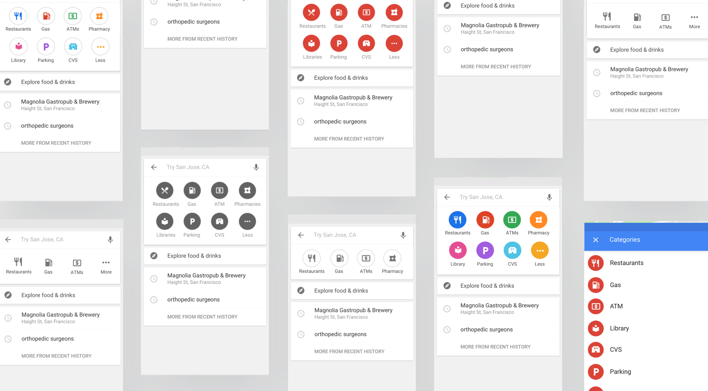

Making it super easy to locate and search for restaurants, gas stations and ATM's on Maps.

Leverage existing patterns within the Maps ecosystem and align to Search efforts
Create a scalable and tappable suggest framework for other surfaces to use internationally. Surface top needs early enough during search and aid in query formulation, scaling to new partners and teams around the world. This will also provide a future path for enhanced driving and navigation needs between trips.
Local Search query traffic for near me (food, gas, ATM) had increased ~15% since 2014. We also found that competitors such as Apple Maps and CityMapper were solving issues for multiple use cases within each app and we weren't. We weren't surfacing top needs early enough during search and it was a challenge for those abroad to formulate the right queries.
Others were surfacing these items as large, colorful versions of their map counterparts. Shortcuts, if you will - to items that would normally be hard to type.


Half of our actions were covered up by the keyboard and easy to miss. Iconography also didn't match what we had on the basemap.
We knew that we had the data to infer a mean wait time average for over 85% of restaurants listed on Google. Other verticals needed higher confidence rates to be considered.
Top needs like Gas Stations, ATM's and Dining were eager to advantage of a more visible design.

Driving, on foot exploration -- they both required a search intent initially, so why not join the search bar and shortcuts?
After a number of prototypes and user studies, we found that most did not care for the swipe method as it hid too many of the options, and other UI patterns just didn't align to our base map and other on-going efforts.
However, within a fixed row or grid view - it was the easiest to locate and see every option at once.
 
In the end, we found that showing all categorical options to users at once was the best path forward. Most of our top categories (gas, atm, pharmacy), were frequently triggered in driving mode.
Most didn't like not knowing how many options were in a swipe view and at the same time having to traverse a long line of options until you reach the end. Thus, in order to save space, we placed all categories into one card that could expand and close.


I created the various UI patterns, tested them with a researcher and worked with my PM to define, shop, and ship this against other roadmap odds, now used as a suggest library for other Maps efforts.
As a constant trial period of evolving maps, interaction and visual design is moving to assist users in new ways, that may require UI to move and adapt to framework level changes.

Portfolio iconography and imagery from Unsplash, Font Awesome and The Noun Project.
Case Studies